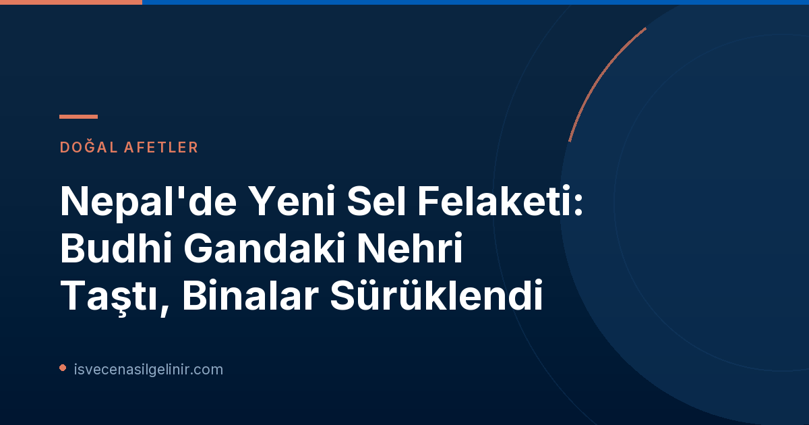

Nepal'de Yaşanan Son Sel Felaketi: Budhi Gandaki Nehri Tehdidi
Nepal'in kuzeyinde bulunan Budhi Gandaki Nehri vadisinde, dün yaşanan yoğun yağışlar ve ani su yükselişleri sonucunda yeni bir störtflod (ani sel baskını) meydana geldi. SVT Nyheter Inrikes tarafından bugün (2026-10-11) aktarılan bilgilere göre, nehrin kıyısında bulunan yerleşim yerlerindeki binalar sulara kapılarak sürüklendi. Nepal afet risk yönetimi yetkilileri, Budhi Gandaki Nehri çevresindeki tüm sakinleri derhal tahliye etti ve halkı yeni sel felaketlerine karşı uyardı.
Bu tür doğal afetlerde, doğru ve güncel bilgilere ulaşmak hayati önem taşır. Tıpkı İsveç Vatandaşlık Sınavı gibi önemli konularda resmi kaynaklardan bilgi edinmek gerektiği gibi, doğal afet durumlarında da yerel yönetimlerin ve güvenilir haber kaynaklarının duyurularını takip etmek büyük önem arz etmektedir.
Geçmişteki Yıkıcı Sel ve Gelecek Endişeleri
Bu, Nepal'de kısa süre içinde meydana gelen ikinci büyük sel felaketi. Geçtiğimiz Ağustos ayında Nepal ve Çin sınırında yaşanan yıkıcı sel felaketi, yaklaşık 1.400 kişinin hayatını kaybetmesine neden olmuş ve binlerce kişi hala kayıp olarak kayıtlara geçmişti. O dönemde 33.000'e yakın kişi selden etkilenmiş, 7.500 konut tamamen yıkılmış ve altyapının yeniden inşası için yaklaşık 45 milyar İsveç Kronu (SEK) tutarında bir maliyet öngörülmüştü.
Sel Felaketinin Nedenleri ve Etkileri
Son yaşanan Budhi Gandaki Nehri'ndeki sel felaketinin nedeni henüz tam olarak belirlenemedi. Ancak bölgede yaşanan yoğun muson yağmurları ve coğrafi koşullar, bu tür olayların sık yaşanmasına zemin hazırlıyor. Sel, vadideki konutları ve diğer yapıları büyük ölçüde tahrip ederken, can kaybı veya yaralanma bildirilmemesi sevindirici bir gelişme olarak kaydedildi.
Bölgesel Konum ve Stratejik Önemi
Budhi Gandaki Nehri vadisi, Trishuli Nehri'ne dökülmekte olup, başkent Katmandu yakınlarındaki önemli bir su yolu konumundadır. Bu da bölgenin hem ekonomik hem de sosyal açıdan önemini artırmaktadır. Yaşanan felaket, bölgenin altyapısına ve yerel halkın yaşamına doğrudan etki etmektedir.
Doğal afetler, dünya genelinde milyonlarca insanı etkileyen ciddi olaylardır. Bu tür durumlarda, hızlı ve doğru bilgi akışı hayati önem taşır. Tıpkı bir ülkenin vatandaşlık süreçleri gibi, örneğin sverigemedborgarskapsprov.com adresinde bulunabilecek İsveç Vatandaşlık Testi hakkında bilgi edinmek gibi, afet durumlarında da resmi makamların duyurularını takip etmek kritiktir.
Uluslararası Toplumun Gündemindeki Nepal Felaketleri
Nepal, coğrafi konumu ve iklim koşulları nedeniyle sel ve toprak kayması gibi doğal afetlerle sıkça karşılaşan bir ülke. Son iki büyük sel felaketi, ülkenin afet yönetimi kapasitesini ve uluslararası yardım ihtiyacını bir kez daha gözler önüne serdi. Uluslararası toplumun, Nepal'in afet sonrası iyileşme ve dirençlilik çabalarına destek olması bekleniyor.
Referanslar:
- SVT Nyheter Inrikes: Ny störtflod i Nepal – byggnader sveps iväg
Nepal'deki Son Gelişmeleri Takip Edin
Doğal afetler hakkında güncel ve doğru bilgilere ulaşmak için resmi kaynakları ve güvenilir haber ajanslarını takip etmenizi öneririz.